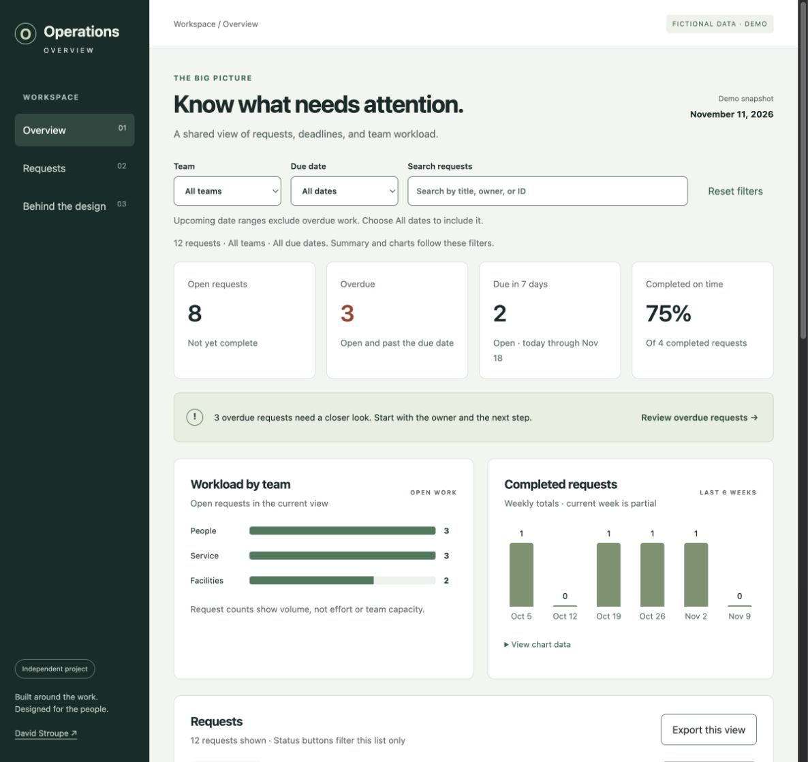

Latest completion | Palantir
Deep Dive: Building Your First Application
A hands-on Foundry course covering Workshop layouts, connected filters and charts, Ontology actions, and a TypeScript function for updating multiple shipments.
View certificateDavid Stroupe / Data Visualization Analyst
I build operational dashboards and reporting tools for government teams and senior leaders.
Independent product design | Music experience
Make room for a good record. An original listening experience with a finite edit and a queue that stays yours.

Three original Suno-generated instrumentals bring a fully working player to life. Listeners can combine search and mood filters, save favorites and named sessions, reorder or protect their queue, and add audio that stays on their device.
Independent portfolio concept with AI-assisted implementation and music. Includes 13 passing automated tests and documented Chrome checks. Participant research, full screen-reader testing, and wider browser coverage remain future work.
Featured independent project
A dashboard for finding overdue work, checking what is coming up, and knowing who owns the next step.

Working demo with fictional data. Includes editable desktop and mobile layouts in Figma.
Overview
Summary → detail01 / Palantir Foundry Workshop · AIP
From a service ticket to a useful application.
Consolidated reporting
Shared context
Supporting detail
02 / Power BI · Executive reporting
Bring scattered reporting into a shared view.
03 / Power Automate · SharePoint
Give incoming requests a consistent path.
04 / SharePoint · Tracking and reporting
Make work easier to track and explain.
Independent UX project · Consumer ordering
A donut shop with a big personality and an ordering flow that keeps the choices clear.
I designed a box builder for six or twelve donuts, with flavor discovery, optional drinks, and room to change your mind. The same product art follows each flavor from the menu into the box, while Doughshi helps customers get started and celebrates the finished assortment.
Independent fan concept with fictional recipes and prices. Includes a working demo and documented checks. No real orders or payments.
Independent UX project | Streaming discovery
Your next world awaits. An anime-inspired streaming experience built around curiosity, discovery, and returning to a story.
Explore sixteen fictional films and series through search, combined filters, dedicated title pages, and a saved list. Two original animated previews include sound, with saved playback progress and viewing preferences.
Independent portfolio concept. Full films and episodes are not available. Browser comparison, screen reader testing, and participant feedback remain outstanding; Section 508 compliance has not been established.
Open-source contributions
What should a chart show when a reading is missing? In this example, four dots represent four observations. At sample 2, there was no reading.
I reproduced the issue in Plotly.py 7.2.0. Setting connectgaps=False broke the line at the missing value, but the area underneath still filled the gap. Splitting the observations into two traces kept the gap visible. Grouping both traces under one legend entry let readers toggle the whole series together.
See the reproduction and Python workaround on GitHub ↗
I compared a proposed fix with its starting revision across 12 runs. In four string cases, Dask initially reported a different data type from the one it returned. With the change, all four matched the pandas reference. Categorical inputs stayed consistent on both revisions.
Continuing to learn
Building on my experience in application design, data, and automation.
Latest completion | Palantir
A hands-on Foundry course covering Workshop layouts, connected filters and charts, Ontology actions, and a TypeScript function for updating multiple shipments.
View certificateExplore by topic. Open a group to see completed training and verification links.
Palantir | Course completion certificate
Palantir | Course completion certificate
Palantir | Course completion certificate
Palantir | Course completion certificate
Microsoft Learn | Module badge
Microsoft Learn | Module badge
Microsoft Learn | Module badge
Microsoft Learn | Module badge
Microsoft Learn | Module badge
Microsoft Learn | Module badge
Microsoft Learn | Module badge

Microsoft Learn | Module badge
Microsoft Learn | Module badge
Microsoft Learn | Module badge
Microsoft Learn | Module badge

Microsoft Learn | Module badge

Microsoft Learn | Module badge

Microsoft Learn | Module badge

Microsoft Learn | Module badge
Microsoft Learn | Module badge

Microsoft Learn | Module badge
How I work
Before I build, I ask what would actually make the work easier. That is where a useful dashboard starts.
More about my approach ↗Contact
For opportunities in data visualization, operational applications, and executive reporting, connect with me on LinkedIn.
Connect on LinkedIn ↗